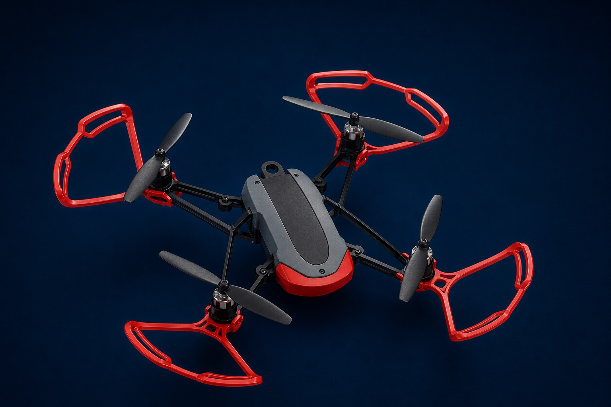

Nine field-tested lessons
Hopper field guide
Learn how pixels become decisions and how four rotors turn those decisions into motion. These lessons pair readable explanations with exact equations, tested code, and evidence-first diagrams.

Choose a topic
Start anywhere. Flight foundations explain the aircraft; visual-intelligence lessons explain what the camera can infer; code references document the commands exactly as Hopper Studio runs them.
The Hopper sensor suite
Learn what can actually be seen on the classroom aircraft, what the flight controller must estimate, and how to describe sensors without turning inference into fact.
02 / 09How an X-quadrotor flies
Build an accurate mental model of thrust, torque, coordinate frames, and the X-configuration using the supplied paper’s NED/FRD convention.
03 / 09Coding blocks field guide
A complete, student-facing map of every Hopper block category, including defaults, units, fresh-scan behavior, and safety consequences.
04 / 09JavaScript API reference
Every supported student-facing JavaScript command, with argument units, defaults, return values, scan freshness, and flight-safety behavior.
05 / 09Binary vision and thresholding
Understand the exact brightness equation, calibrate a threshold from evidence, and build decisions that survive shadows, glare, and noise.
06 / 09Object detection and Hopper’s default neural network
Name the exact detector, trace its real tensor shapes, understand what its 4.5 million coefficients do, and use confidence without pretending it is certainty.
07 / 09Teachable Machine image models
Design classes, collect balanced evidence, export the correct three files, and understand why a whole-frame classifier is not an object detector.
08 / 09AprilTags with Hopper
Understand the tag36h11 family, the local detection pipeline, normalized pose fields, and the exact limits of Hopper’s centering controller.
09 / 09Python coding reference
Every supported Python command and helper, with explicit defaults, named arguments, return shapes, language differences, and safe mission patterns.